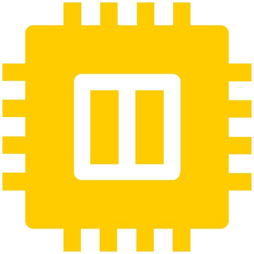
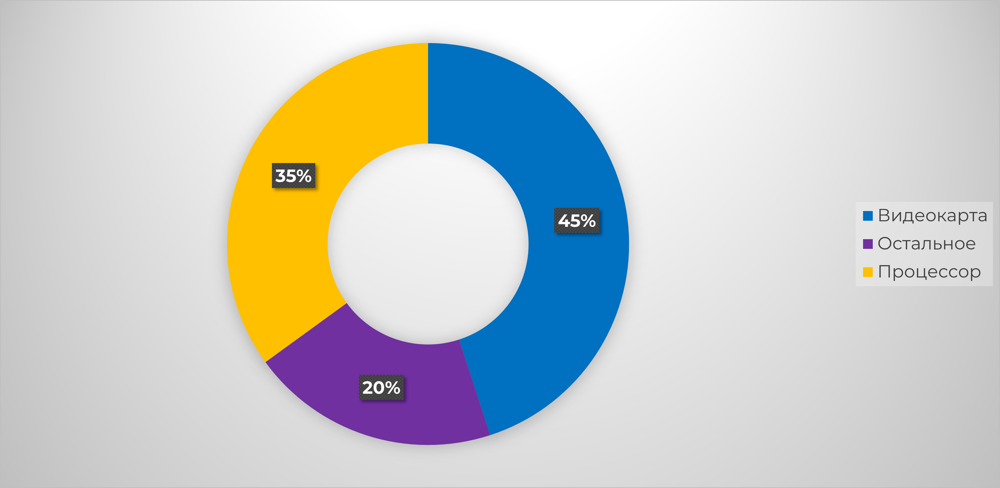

История: как Максим выбирал процессор
Однажды в маленьком городке жил человек по имени Максим. Он был заядлым геймером, любил смотреть фильмы в высоком разрешении и иногда увлекался работой с графическими редакторами. Его старый компьютер, хоть и был верным спутником, уже не справлялся с растущими требованиями современных программ и игр. Программы работали медленно, а игры часто зависали. Решив, что пришло время обновить технику, Максим решил собрать себе новый компьютер. Однако столкнулся с проблемой — он абсолютно не разбирался в процессорах.
Максим начал искать информацию, но чем больше данных он находил, тем больше путался. Вопросы, которые его мучили, были простыми, но ответ на них не был таким очевидным. «Какой процессор мне выбрать? AMD или Intel? Сколько ядер мне нужно для игр? Какая частота будет лучше? И что важнее: количество потоков или высокая частота?» Эти и многие другие вопросы ставили его в тупик.
Не зная, с чего начать, Максим решил разобраться с основами и разобраться, как выбрать процессор, который подойдет именно ему. И вот, шаг за шагом, он нашел ответы на свои вопросы. В этом лонгриде мы расскажем, как Максим решал эту задачу, и, возможно, эта история поможет вам, если вы окажетесь в похожей ситуации.
Шаг 1. Определите, для чего нужен компьютер

Первое, что сделал Максим, — сел и честно ответил себе на вопрос: «Для чего мне нужен компьютер?»
Этот шаг помог ему расставить приоритеты и избежать лишних трат на ненужные функции. Оказалось, что в зависимости от целей требования к процессору сильно различаются.
Игры
Максим задумался: «А зачем мне мощный процессор для игр, если основную работу в них выполняет видеокарта?» И действительно, большинство современных игр больше зависят от мощности графического адаптера. Однако есть нюанс: процессор должен справляться с обработкой игровых данных, физики и искусственного интеллекта. Например, в стратегиях или симуляторах с большим количеством юнитов процессор оказывается важнее видеокарты.
Для геймеров часто рекомендуют модели с высокой тактовой частотой и 6–8 ядрами, таких как Intel Core i5/i7 или AMD Ryzen 5/7. Они обеспечивают плавный FPS (количество кадров в секунду), особенно в многопользовательских онлайн-играх. Если вы хотите стримить игры или играть в разрешении 4K, то потребуется процессор более высокого уровня, например, Ryzen 9 или Intel Core i9.
Работа с графикой и видео
Работа с профессиональными приложениями, такими как Adobe Premiere Pro, DaVinci Resolve или Blender, предъявляет совершенно другие требования. Здесь важна возможность процессора справляться с большим числом задач одновременно.
Чем больше ядер и потоков у процессора, тем быстрее выполняется рендеринг видео, обработка 3D-сцен или работа с большими изображениями. Максим понял, что для этих задач лучше всего подходят процессоры серии Ryzen 7/9 от AMD или Intel Core i7/i9. AMD особенно хороши благодаря большому количеству ядер при более доступной цене.
Офис и интернет
Максим решил, что для таких задач, как работа с офисными приложениями, просмотр видео на YouTube или чтение почты, нет смысла переплачивать за мощный процессор. Бюджетные модели, такие как Intel Core i3 или AMD Ryzen 3, отлично справляются с этими задачами.
Главное, чтобы процессор поддерживал современные интерфейсы и имел достаточно ядер для плавной работы. Сегодня даже недорогие процессоры легко справляются с десятками открытых вкладок в браузере и воспроизведением видео в Full HD.
Универсальность
Максиму хотелось собрать компьютер, который мог бы быть универсальным инструментом для разных задач: игр, обработки видео и повседневного использования. Он понял, что такие запросы требуют компромисса. Универсальный компьютер должен иметь сбалансированный процессор — мощный, но не слишком дорогой.
В этой категории особенно популярны AMD Ryzen 5 и Intel Core i5, которые предлагают оптимальное соотношение цены и производительности. Они имеют достаточно ядер для многозадачности и высокую тактовую частоту для игр.
Шаг 2. Понять основные характеристики процессоров

Максим продолжил углубляться в мир процессоров и начал изучать их ключевые характеристики. Вот какие моменты ему особенно запомнились:

Ядра и потоки
Процессор можно представить как центральную «мозговую» часть компьютера, и количество ядер в нём играет огромную роль в его производительности. Ядра — это отдельные части процессора, каждая из которых может выполнять свои задачи. Чем больше ядер, тем лучше процессор справляется с многозадачностью. Например, если вы одновременно запускаете несколько приложений или работаете с видеофайлами, процессор с большим количеством ядер будет быстрее и эффективнее распределять нагрузку.
Кроме того, существует такая вещь, как потоки. Потоки — это виртуальные ядра, которые позволяют процессору выполнять дополнительные операции на каждом физическом ядре. То есть если у процессора 4 физических ядра, но поддерживается технология многозадачности (Hyper-Threading у Intel или SMT у AMD), то он может работать с 8 потоками, увеличивая общую производительность в задачах с высокой многозадачностью, таких как рендеринг или видеомонтаж.
Тактовая частота
Другим важным параметром является тактовая частота, измеряемая в гигагерцах (ГГц). Это показатель скорости, с которой процессор выполняет инструкции. По сути, тактовая частота показывает, сколько операций процессор может выполнить за одну секунду. Чем выше эта частота, тем быстрее выполняются расчёты и обрабатываются данные.
Однако важно понимать, что частота не всегда является единственным фактором. Например, при одинаковой частоте процессор с большим количеством ядер может быть более эффективным при выполнении многозадачных операций, чем процессор с меньшим числом ядер. Тем не менее, если вы планируете использовать процессор для игр или приложений, которые зависят от скорости одного ядра, высокая частота будет большим плюсом.
Кэш-память
Кэш-память — это встроенная память, которая находится внутри процессора и используется для хранения часто запрашиваемых данных. Каждый процессор имеет несколько уровней кэш-памяти: L1, L2 и L3. L1 — это самая быстрая, но и самая маленькая память, которая хранит данные для быстрого доступа. L2 и L3 имеют больший объём, но скорость их работы немного ниже. Чем больше кэш-память, тем быстрее процессор может получить нужную информацию, что особенно важно при работе с большими объёмами данных или при многозадачности.
С увеличением объёма кэш-памяти процессор становится более «умным» в плане обработки запросов и может значительно ускорить выполнение операций, не обращаясь каждый раз к основной памяти (RAM), что снижает задержки.
Энергопотребление и тепловыделение
Максим, как и многие другие пользователи, обратил внимание на такие важные характеристики, как энергопотребление и тепловыделение. Эти параметры влияют на то, насколько сильно процессор будет нагреваться при нагрузке и сколько энергии он будет потреблять. Процессоры с низким TDP (Thermal Design Power) — показателем тепловыделения — обычно выделяют меньше тепла и требуют менее мощных систем охлаждения. Это важно для людей, которые хотят собрать систему с хорошей теплоотдачей без необходимости покупать дорогие или шумные кулеры.
Для пользователей, которые не планируют разгонять процессор или использовать его для тяжёлых вычислений в течение длительного времени, низкий TDP — это отличный выбор, так как такие процессоры работают тихо и не перегреваются, что увеличивает срок службы компонентов.
Шаг 3. AMD или Intel?

В магазине Максим столкнулся с настоящей дилеммой. На рынке процессоров два гиганта — AMD и Intel, и оба бренда предлагают продукцию с похожими характеристиками, но каждое из их решений имеет свои уникальные особенности и преимущества. Как выбрать между ними, чтобы не ошибиться?
AMD
Одним из основных преимуществ процессоров AMD является их ценовая доступность. Обычно они стоят дешевле, чем аналогичные по характеристикам процессоры Intel. Это делает их отличным выбором для пользователей, которые ищут оптимальное соотношение цены и производительности. AMD традиционно предлагает больше ядер и потоков по той же цене, что и их конкуренты. Это особенно важно для многозадачности, где требуется эффективно распределять нагрузки между различными процессами, например, в профессиональных приложениях для работы с графикой, видео или при рендеринге.
Кроме того, AMD становится всё более популярным среди пользователей, которые занимаются многозадачностью. Процессоры AMD Ryzen обеспечивают отличную производительность при выполнении нескольких задач одновременно, будь то параллельная работа с приложениями или обработка больших данных. AMD активно развивает свои технологии многозадачности, и процессоры серии Ryzen с архитектурой Zen 3 или Zen 4 доказывают, что они могут конкурировать с Intel на высоком уровне.
Intel
С другой стороны, Intel традиционно занимает лидерские позиции в области однопоточной производительности. Для некоторых задач, особенно для игр, важно не только наличие большого количества ядер, но и высокая производительность на одно ядро. Процессоры Intel, как правило, обеспечивают более высокие тактовые частоты, что делает их более быстрыми в играх и приложениях, которые не могут эффективно использовать большое количество ядер.
Intel всегда славился своей стабильностью и возможностью долгосрочной поддержки своих платформ. Многие пользователи ценят процессоры Intel за их удобство в настройке и надёжность. Для тех, кто хочет собрать ПК, который будет работать стабильно, без неожиданных сбоев и проблем с совместимостью, Intel является проверенным и гарантированно качественным выбором.
Процессоры Intel отлично подходят для игр, поскольку современные игры, как правило, сильно зависят от производительности одного ядра, а именно здесь Intel выигрывает за счет высокой тактовой частоты. Так что для тех, кто планирует играть в самые современные и требовательные игры, процессоры Intel могут стать предпочтительным вариантом.
Максим выбрал AMD Ryzen 7, так как он хотел и играть, и монтировать видео.
Шаг 4. Совместимость с другими компонентами

Когда Максим определился с процессором, оказалось, что это только начало. Процессор должен быть совместим с:
- Материнской платой: Чипсет и сокет должны совпадать. Например, для AMD Ryzen нужен сокет AM4 или AM5, а для Intel — LGA1200 или LGA1700.
- Оперативной памятью: Чем быстрее память (DDR4 или DDR5), тем лучше.
- Системой охлаждения: Некоторые процессоры идут с кулером в комплекте, но для мощных моделей лучше купить отдельный кулер.
Шаг 5. Учет бюджета

Максим рассчитал бюджет для сборки компьютера, осознавая, что процессор — это только одна из составляющих. Он понял, что важно сбалансировать расходы, оставив деньги на видеокарту, оперативную память, накопитель и блок питания.
Видеокарта занимает большую часть бюджета, так как она определяет производительность при играх и работе с графикой. Оперативная память важна для многозадачности и быстрой работы программ, а SSD ускоряет загрузку системы и приложений. Блок питания необходим для стабильной работы всех компонентов.

Примерный расклад бюджета:
- Процессор: 30–40% от общего бюджета — это логично, ведь процессор является важной составляющей для вычислительных задач, но не всегда определяет всю производительность системы.
- Видеокарта: 40–50% — видеокарта часто требует наибольших затрат, особенно если Максим планировал использовать ПК для игр или работы с графикой.
- Остальное: (оперативная память, накопитель, блок питания и корпус): оставшиеся 10–20% бюджета — это та сумма, которую можно распределить между другими важными частями, такими как память, накопитель, охлаждение и корпус.
Максим понял, что важно найти баланс между компонентами для оптимальной работы компьютера.
Вывод
Если вы хотите выбрать правильный процессор, следуйте этим шагам:
- Четко определите свои цели: Подумайте, для чего вам нужен компьютер. Будет ли это для игр, работы с графикой, видео, или для повседневных задач? Определение целей поможет вам сузить круг подходящих вариантов.
- Понимайте, какие характеристики важны для ваших задач: Знание основных характеристик, таких как количество ядер, потоки, тактовая частота и кэш-память, поможет вам выбрать процессор, который будет справляться с конкретными задачами.
- Учитывайте совместимость с другими компонентами: Обратите внимание на сокет процессора, чтобы он соответствовал вашей материнской плате. Также учитывайте потребление энергии и теплоотведение.
- Сравнивайте модели и производителей: Изучите разные модели процессоров от Intel и AMD, их особенности и производительность. Сравните цены и возможности, чтобы выбрать лучшее соотношение цены и качества.
- Не забывайте про бюджет: Установите лимит на покупку, чтобы не выйти за рамки бюджета. Это поможет сосредоточиться на процессорах, которые соответствуют вашим финансовым возможностям.
Теперь, как Максим, вы сможете выбрать процессор, который станет сердцем вашего нового компьютера. Удачи в сборке и не забывайте, что правильный выбор — залог долгой и стабильной работы вашего ПК!